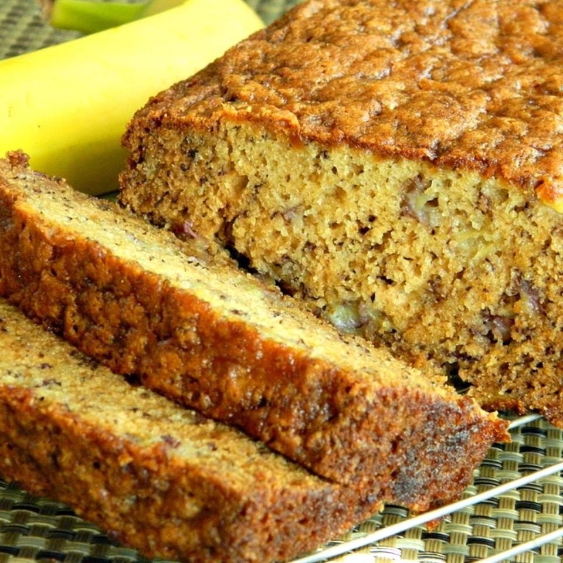

Banana Bread

Description
Easy and quick banana bread recipe to prepare!
Preparation time will take 15 minutes, cook time needs 1 hour; yielding 1 9x5-inch loaf serving 10.
Per Serving: 225 calories; protein 3g; carbohydrates 42.4g; fat 5.4g; cholesterol 30.8mg; sodium 398.8mg.
Ingredients
- 3 ripe bananas, mashed
- 1 cup white sugar
- 1 egg
- 1/4 cup melted butter
- 1 1/2 cups all-purpose flour
- 1 teaspoon baking soda
- 1 teaspoon salt
Steps
-
Preheat oven to 325 degrees F (165 degrees C). Grease a 9x5-inch loaf pan.
-
Combine bananas, sugar, egg, and butter together in a bowl.
Mix flour and baking soda together in a separate bowl;
stir into banana mixture until batter is just mixed.
Stir salt into batter. Pour batter into the prepared loaf pan.
-
Bake in the preheated oven until a toothpick inserted in the center
of the bread comes out clean, about 1 hour.